Engineering Archive
Complete 18-project engineering archive of production software & machine learning systems

QPGen: Automated Question Paper Generator
Institutional exam platform serving 50+ faculty across 8 departments. Features 3NF PostgreSQL on Supabase (5,000+ constraints), Bloom's Taxonomy rules, and AST-to-PDF compilation under 10s.

EZQ: Tokenized Queue Management System
An AI-powered SaaS platform that transforms traditional waiting lines into intelligent virtual queues with real-time tracking, predictive analytics, and seamless remote token management.
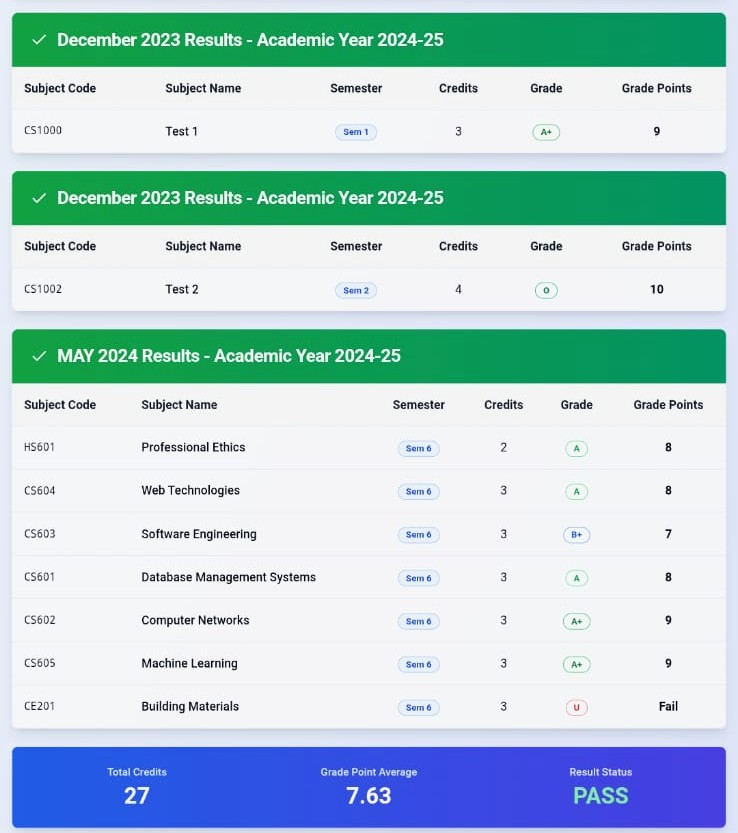
Result Portal
A university examination result management system with real-time result publishing, academic history tracking, and comprehensive administrative controls.
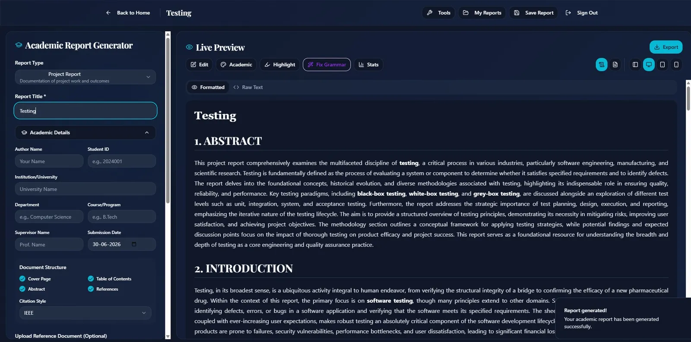
AI Integrated Report Generator
An AI-powered SaaS platform that autonomously researches, generates, formats, and exports professional report documents from a simple project description.
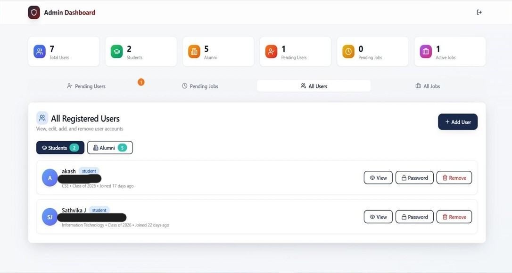
Alumni Atlas: Alumni Connector Platform
A centralized full-stack web application that streamlines alumni management, networking, event coordination, and institutional engagement through a secure digital platform.
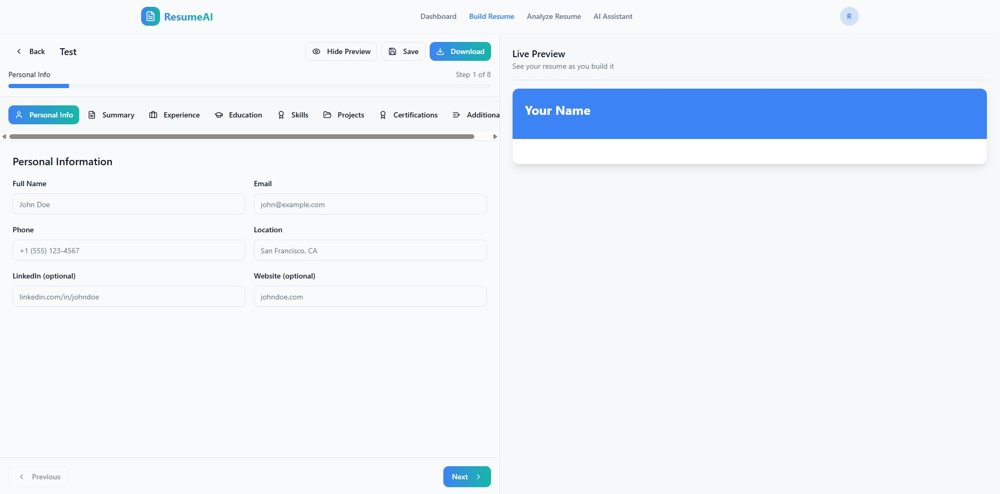
ATS Resume Builder & Analyzer
An AI-powered SaaS platform that builds, analyzes, and optimizes ATS-friendly resumes through intelligent automation, conversational guidance, and job-specific customization.
Certificate Generator
A secure workflow-driven web application that automates college certificate requests, sequential authority approvals, and digital certificate generation.
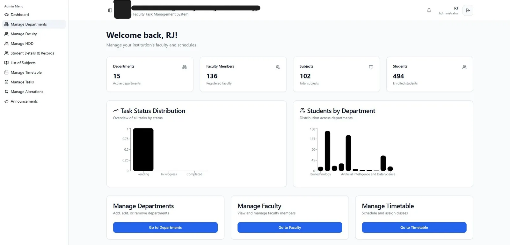
Faculty Task Management System
An intelligent SaaS platform that automates faculty scheduling, workload management, class substitutions, and student progress tracking for educational institutions.
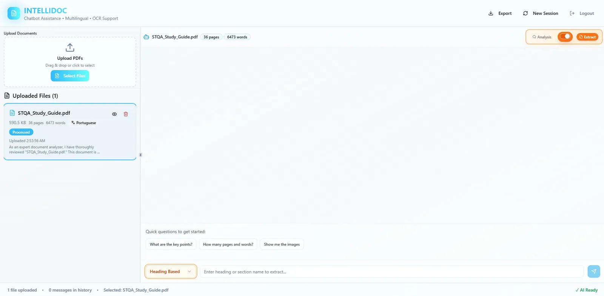
INTELLIDOC: Document Analyzer & Data Extractor
An AI-powered document intelligence platform that combines conversational PDF analysis with precision data extraction, OCR, multilingual support, and advanced document processing.

Mudra Mastery: Classical Gesture AI
Recognizes 51 Bharatanatyam hand mudras in real time at 60 FPS using 21 MediaPipe coordinates, custom TFLite neural weights, and Gemini Vision API cloud fallback.
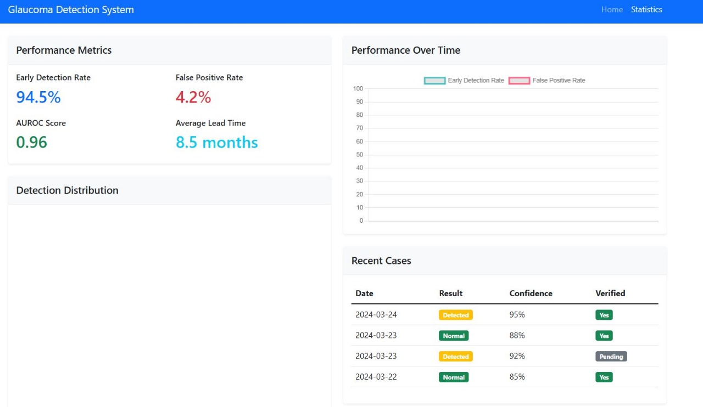
Glaucoma Disease Detector
An AI-powered multi-modal glaucoma detection system that combines Fundus images, OCT scans, and clinical data to enable early diagnosis, progression risk prediction, and explainable medical insights.
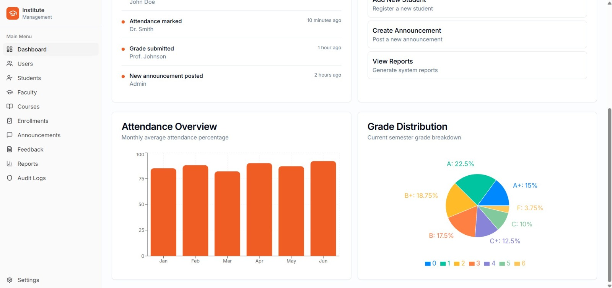
Institute ERP System
A comprehensive role-based Institute ERP platform that digitizes and automates academic, administrative, and placement operations through a centralized, cloud-powered management system.
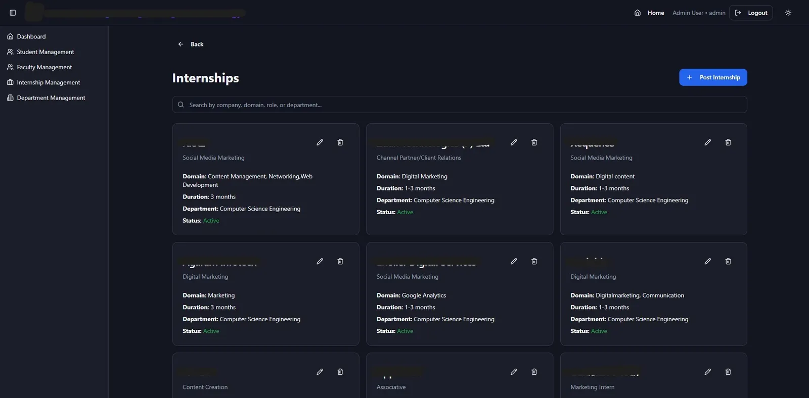
INSTA APPLY: Internship Management System
A comprehensive SaaS-based internship management platform that centralizes internship discovery, application, tracking, and verification for students, faculty, and administrators.
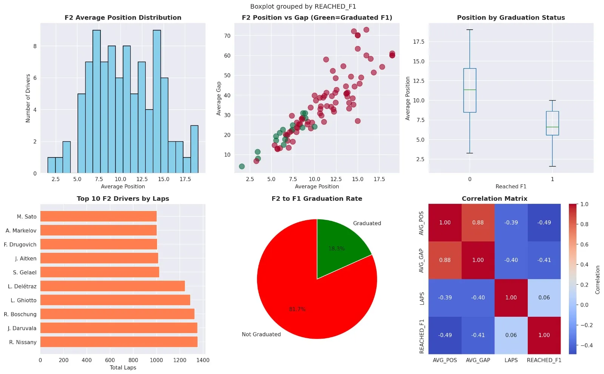
ML Based F1 Rookie Predictor
An AI-powered Formula 1 rookie predictor that uses junior-series performance data and machine learning to forecast rookie success tiers and rank future F1 prospects.
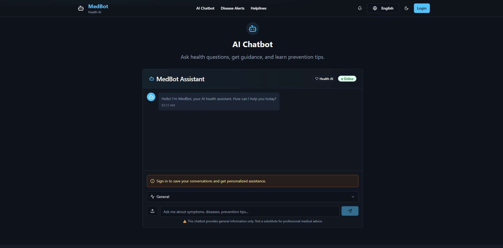
AI Integrated Medbot
An AI-powered, multilingual SaaS public health chatbot that mitigates medical misinformation and tracks regional outbreaks in real-time using verified government databases.
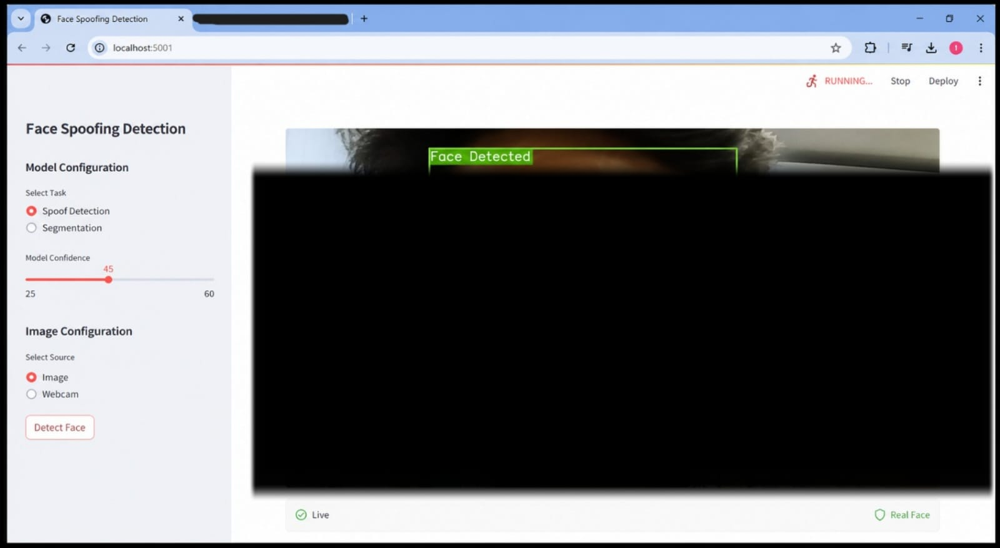
Real-Time Face Anti-Spoofing & Adversarial Attack
A dual-stream biometric security system that integrates YOLOv8 contextual detection and deep learning to prevent facial spoofing and presentation attacks in real-time.
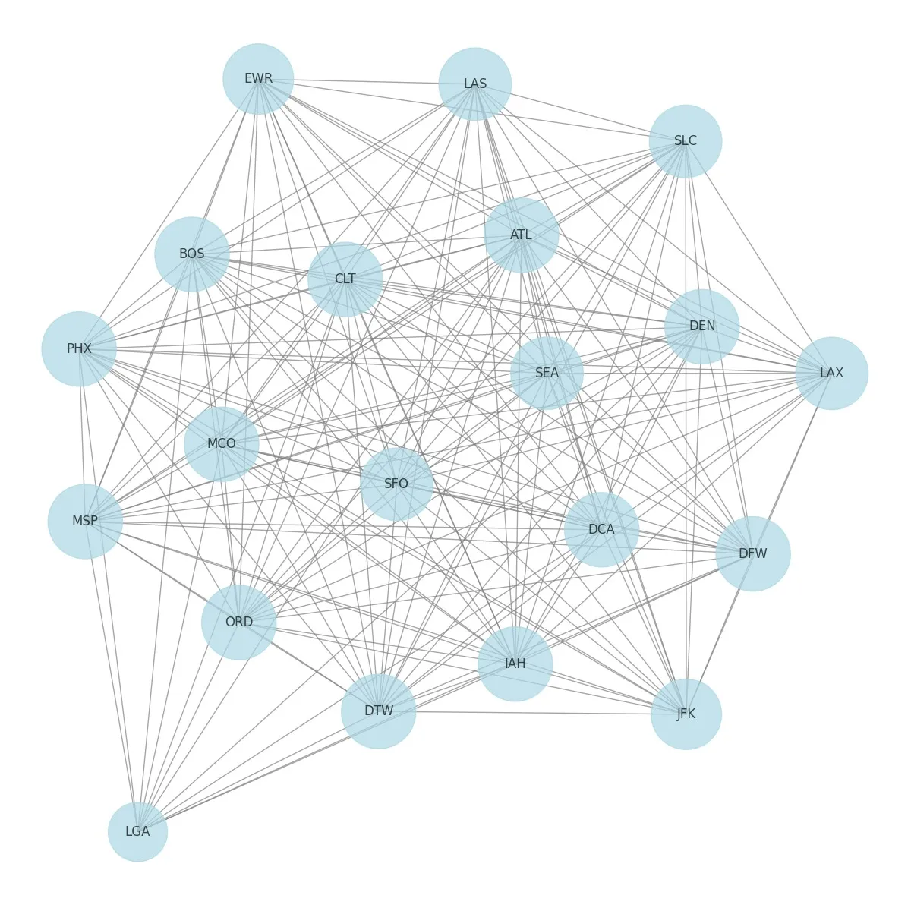
ML Based Flight Delay Predictor Detection
Integrated ML and network simulation framework that predicts U.S. flight delays and models their propagation to improve operational resilience.
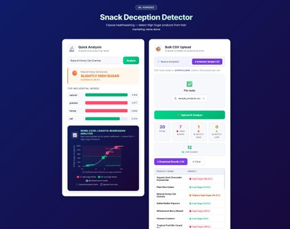
Deceptive Marketing NLP & Sugar Classifier
End-to-end NLP classification pipeline predicting high-sugar snacks from front-of-package marketing text. 13 benchmarked models, 5,000-feature LSA matrices, custom MLP neural net, and SHAP explainability.